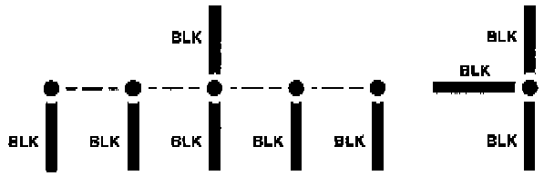

Operation CHARM
: Car repair manuals for everyone.
Home
>>
Acura
>>
1994
>>
Integra (RS, LS) L4-1834cc 1.8L DOHC FI
>>
Repair and Diagnosis
>>
Sensors and Switches
>>
Sensors and Switches - Lighting and Horns
>>
Headlamp Switch
>>
Diagrams
>>
Diagram Information and Instructions
>>
Symbols
>>
Splices
Splices
Splices:

Splices are shown as a dot. Their location and the number of wires may vary depending on the harness manufacturer.